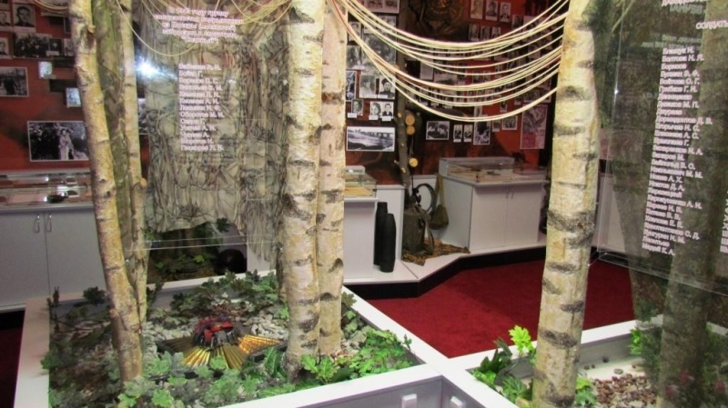

ГУО «Средняя школа № 22 г. Могилева»
Добро пожаловать в виртуальный музейный квест по экспонатам музея боевой славы, посвященный подвигу отряда «Славный».
Музей боевой славы ГУО «Средняя школа № 22 г. Могилева» был открыт более 40 лет назад. Его экспозиция бережно хранит память о героических страницах истории нашего народа.
Наши соседи — учителя и ученики школы № 22 — предоставили уникальные музейные предметы, документы и фотографии. На основе этих материалов мы создали интерактивный квест, который позволит вам прикоснуться к истории.
Перейти к квесту